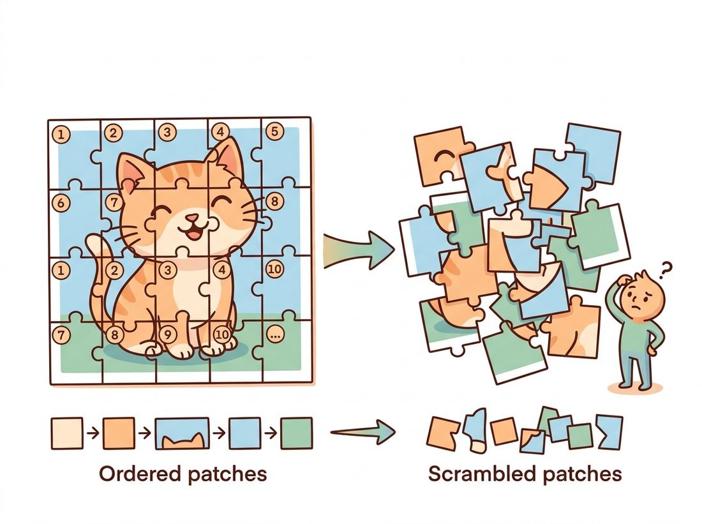

"They handed me a sentence with no word order and asked me to translate it. So I stuck a little numbered sticker on every word. The stickers were the whole trick. Lose them and a cat becomes a bag of fur in random places."
A Positional Embedding That Refuses to Be Forgotten
A Vision Transformer is the transformer encoder of Section 22.1 with exactly four additions in front of it: cut the image into fixed patches, linearly embed each patch into a token, prepend one learnable class token, and add positional embeddings so the model knows where each patch came from. Everything else is the stack of blocks you already built. The surprise of the 2020 ViT paper was how little had to change: a model designed for words, fed a sequence of "16x16 visual words", matched the best convolutional networks once it had enough data to compensate for the inductive bias it threw away. This section builds that model end to end and shows that its first layer, the patch embedding, is a convolution in disguise.
In Section 22.1 we built a transformer encoder that operates on any sequence of token vectors, and we deliberately left the tokens abstract. Now we make them concrete. The reader who has spent four chapters thinking in feature maps may find the move jarring: we are about to abandon the spatial grid and treat an image as a flat list. The payoff is that the global, content-dependent attention of the previous section can now relate any region of the image to any other in a single layer. The work of this section is the plumbing that connects pixels to that engine, and the central realization is that almost none of it is new.
1. The Patch Embedding: An Image Becomes a Sequence Beginner
The transformer wants a sequence of vectors. An image is a grid of pixels. ViT bridges the two with the simplest possible idea: partition the image into a grid of non-overlapping square patches, and turn each patch into one token. For a $224 \times 224$ image and a patch size of $16$, the grid is $14 \times 14 = 196$ patches. Each patch holds $16 \times 16 \times 3 = 768$ raw pixel values (the $3$ is the RGB color channels from Chapter 1); flatten that into a vector and pass it through a single learned linear layer to produce a $D$-dimensional token embedding (the base ViT uses $D = 768$; this $D$ is the model width written $d$ in the cost formulas of Section 22.1). The result is a sequence of $196$ token vectors, exactly the input shape the encoder expects.
Here is the elegant part. Flattening each non-overlapping patch and applying the same linear map to all of them is mathematically identical to a single convolution whose kernel size and stride both equal the patch size. The equivalence is exact because a convolution at one spatial location already computes a dot product between a flattened window of the input and each kernel, which is precisely "flatten this patch and apply a learned linear map"; setting the stride equal to the kernel size makes the windows non-overlapping, so the $14 \times 14$ grid of convolution outputs is exactly the $196$ patch tokens. The kernel is $16 \times 16$, it strides by $16$ so windows never overlap, and it has $D$ output channels. So the "patch embedding" is one strided convolution, the very operation from Chapter 19, and every modern implementation writes it that way because it is faster and cleaner than an explicit reshape. Figure 22.2.1 shows the transformation.
# Patch embedding: turn an image into a sequence of tokens. A non-overlapping
# patch projection is exactly a conv whose kernel and stride both equal the
# patch size, so one Conv2d does the split-flatten-embed in a single op.
import torch
import torch.nn as nn
class PatchEmbed(nn.Module):
"""Split an image into patches and embed each as a token. Implemented as a conv."""
def __init__(self, img_size=224, patch_size=16, in_chans=3, embed_dim=768):
super().__init__()
self.num_patches = (img_size // patch_size) ** 2 # 14*14 = 196
# kernel == stride == patch_size -> non-overlapping patch projection
self.proj = nn.Conv2d(in_chans, embed_dim, kernel_size=patch_size, stride=patch_size)
def forward(self, x): # x: (B, 3, 224, 224)
x = self.proj(x) # (B, 768, 14, 14)
x = x.flatten(2).transpose(1, 2) # (B, 196, 768): tokens last but one
return x
pe = PatchEmbed()
print("token sequence:", pe(torch.randn(1, 3, 224, 224)).shape)
# token sequence: torch.Size([1, 196, 768])The patch size sets everything downstream. Smaller patches (say $8 \times 8$) give more tokens, finer spatial detail, and a quadratically larger attention cost; larger patches ($32 \times 32$) give a short, cheap sequence but a coarse view that blurs small objects. The base ViT's $16 \times 16$ is a deliberate middle. Notice that a patch ViT has almost no locality bias within a patch either: the pixels of one patch are mixed by a single linear layer with no notion of which pixel is next to which. This is the inductive bias the convolution had and the ViT gave up, traded for the global attention that follows.
2. The Class Token and Positional Embeddings Beginner
Two pieces of bookkeeping remain before the sequence is ready, and both fix problems created by the move to a token list. The first is the class token. After the encoder, we need a single vector to feed the classifier, but the encoder outputs one vector per patch. Rather than pool the patch outputs, ViT prepends an extra learnable token, the class token (often written [cls]), to the front of the sequence. It carries no image content at the start; it is just a learned parameter. As it passes through the encoder it attends to every patch, gathering a global summary, and its final state is the image representation handed to the classification head. It is a learnable placeholder that the network fills in with whatever global information the task needs.
The second piece is positional embeddings, and they are not optional. Self-attention is permutation-invariant: shuffle the order of the tokens and the set of outputs is merely shuffled the same way, because attention treats its input as a set, not a sequence. That is fine for an unordered set, but an image is profoundly ordered; the patch in the top-left is not interchangeable with the one in the center. To restore spatial information, ViT adds a learned position vector to each token, one distinct vector per position. After this addition the token "knows" both what it contains and where it sits. The base ViT learns these position vectors directly as parameters; later designs use relative or 2D-aware schemes, but the principle is identical. Remove the positional embeddings and a ViT's accuracy collapses, because a cat reassembled from patches in random order is no longer a cat, as the illustration below makes vivid.

Because the positional embeddings are just learned vectors indexed by position, you can ask whether the model figured out the 2D layout on its own. The original ViT paper plotted the cosine similarity between learned positional embeddings and found a striking result: each position's embedding is most similar to its spatial neighbors, forming a clear 2D grid pattern, even though the model was never told the patches came from a grid. The transformer rediscovered the geometry of the image from the supervised signal alone.
3. Assembling the Full ViT Intermediate
We now have every part: the patch embedding of subsection 1, the class token and positional embeddings of subsection 2, the transformer block of Section 22.1, and a final linear classification head. Assembling them gives the complete ViT. The forward pass reads exactly like the figure: embed patches, prepend the class token, add positions, run the encoder, take the class token's output, normalize, and classify. The code below reuses the TransformerBlock from Section 22.1.
# Full ViT-Base/16: patch embedding, a prepended learnable class token, learned
# positional embeddings, a stack of transformer blocks, then classify the final
# state of the class token alone. This reuses TransformerBlock from Section 22.1.
import torch
import torch.nn as nn
class VisionTransformer(nn.Module):
def __init__(self, img_size=224, patch_size=16, in_chans=3, num_classes=1000,
embed_dim=768, depth=12, num_heads=12, mlp_ratio=4.0):
super().__init__()
self.patch_embed = PatchEmbed(img_size, patch_size, in_chans, embed_dim)
n = self.patch_embed.num_patches
# learnable class token and (n+1) positional embeddings
self.cls_token = nn.Parameter(torch.zeros(1, 1, embed_dim))
self.pos_embed = nn.Parameter(torch.zeros(1, n + 1, embed_dim))
self.blocks = nn.ModuleList([
TransformerBlock(embed_dim, num_heads, mlp_ratio) for _ in range(depth)
])
self.norm = nn.LayerNorm(embed_dim)
self.head = nn.Linear(embed_dim, num_classes)
nn.init.trunc_normal_(self.pos_embed, std=0.02)
nn.init.trunc_normal_(self.cls_token, std=0.02)
def forward(self, x):
B = x.shape[0]
x = self.patch_embed(x) # (B, 196, 768)
cls = self.cls_token.expand(B, -1, -1) # (B, 1, 768)
x = torch.cat((cls, x), dim=1) # prepend -> (B, 197, 768)
x = x + self.pos_embed # add positions
for blk in self.blocks:
x = blk(x) # L transformer blocks
x = self.norm(x)
return self.head(x[:, 0]) # classify the class token
vit = VisionTransformer()
print("params (M):", round(sum(p.numel() for p in vit.parameters()) / 1e6, 1))
# params (M): 86.6 (this is ViT-Base/16)
print("logits:", vit(torch.randn(2, 3, 224, 224)).shape) # torch.Size([2, 1000])x[:, 0]) reaches the classification head.That is the entire architecture. The parameter count of about $86.6$ million is dominated by the twelve blocks, each carrying four projection matrices for attention and two large MLP matrices, exactly the per-block budget you can derive from Section 22.1. There is no pyramid, no pooling between stages, and no resolution change anywhere: every block sees the same $197$ tokens at the same width. That uniformity is part of the appeal (it makes scaling clean, as we will see in Section 22.5) and part of the inefficiency that Section 22.4 sets out to fix.
The roughly forty lines above (plus the Section 22.1 block) teach the architecture. To actually use a ViT, you load a pretrained one from timm, which gives you the topology, ImageNet weights, and the exact preprocessing transform in three lines:
# Load a pretrained ViT-Base/16 plus the exact preprocessing its weights expect,
# so inference matches training without hand-coding the resize/crop/normalize.
import timm
model = timm.create_model("vit_base_patch16_224", pretrained=True).eval()
# the matching preprocessing (resize, crop, normalize) the weights expect:
cfg = timm.data.resolve_data_config({}, model=model)
transform = timm.data.create_transform(**cfg)
# logits = model(transform(pil_image).unsqueeze(0))timm. create_model brings the topology and ImageNet weights; resolve_data_config plus create_transform reconstruct the exact resize, crop, and normalization those weights were trained with.The library handles the weight download, the class-token and position-embedding initialization, the patch-embedding convolution, and the preprocessing pipeline tied to those weights. As in Chapter 20, getting the preprocessing exactly right is the difference between sensible logits and garbage, and resolve_data_config removes that risk. timm exposes hundreds of ViT, DeiT, and Swin variants through the same interface.
4. What the Encoder Actually Learns Advanced
It is natural to worry that a model with no locality bias would learn nothing sensible, yet trained ViTs develop structure that mirrors what CNNs learn, only reached differently. Analyses of trained ViTs (and the attention-rollout visualizations that aggregate attention across layers) show three consistent findings. First, lower blocks tend to attend locally, the model rediscovers that nearby patches are relevant, even though it could attend anywhere; higher blocks attend globally, relating distant regions. Second, the class token's attention in the final layers concentrates on the patches that actually contain the object, which is why those maps double as a rough, free segmentation. Third, the learned positional embeddings encode the 2D grid, as the fun fact above noted.
The practical lesson is that the inductive biases a CNN has built in, a ViT must learn, and it can learn them given enough data, but the words "enough data" are doing heavy lifting. That phrase is the entire subject of the next section. The decision of when to reach for a ViT therefore comes down to a question this section cannot answer alone: do you have, or can you borrow through pretraining, the data scale that lets the model learn the structure it was not given? Figure 22.2.1 and the code give you the architecture; Section 22.3 gives you the recipe that makes it trainable on the data most teams actually have.
Who: a solo researcher building a wildlife camera-trap triage tool, 2024. Situation: she had a ViT classifier that told her whether a frame contained an animal, but the product team also wanted a rough bounding box to crop thumbnails, and there was no budget to label boxes. Problem: training a separate detector needed annotations she did not have. Decision: instead of new labels, she extracted the class token's attention weights over the patch tokens from the last encoder block, reshaped the $196$ weights back into the $14 \times 14$ grid, upsampled it to the image size, and thresholded it into a coarse mask. Result: the attention heatmap reliably lit up on the animal, giving a usable crop box for free, with zero extra training, because the class token had learned to attend to the object in order to classify it. Lesson: the attention map is not just an interpretability toy; the same mechanism that makes ViTs classify produces a spatial saliency signal you can reuse, a preview of the foreground discovery that self-supervised ViTs in Chapter 25 push much further.
The camera-trap story is a weekend project you can ship to a portfolio. Load a pretrained vit_base_patch16_224 from the timm shortcut above, register a forward hook on the last block's attention, and run any single-object photo through it. Take the class token's attention to the $196$ patch tokens, reshape to the $14 \times 14$ grid, upsample to the input size, threshold it into a mask, and emit the tight bounding box of the lit-up region. Wrap that in a tiny command-line script (or a small Gradio page) that takes an image and returns the cropped object, with the heatmap overlaid for debugging. It is roughly forty lines, needs no training and no box labels, and demonstrates the section's two load-bearing ideas at once: the class token gathers a global summary, and its attention doubles as free saliency. Difficulty: beginner to intermediate, about an hour. As a stretch, swap in the register-token model from the Research Frontier below and compare how much cleaner the masks become, or batch the script over a folder of product photos to auto-generate thumbnail crops, the kind of zero-label tooling a real catalog team actually wants.
The camera-trap example treats the class token's attention as a reliable saliency map, and for a clean single-object photo it often is. The damaging leap is to conclude that the attention weights are a faithful, complete account of what the network used to decide. They are not. A single layer's attention is only one of many mixing steps; information also flows through the residual stream, the MLPs, and (over depth) through chains of indirect attention that a single map cannot show. As the Research Frontier below notes, untreated ViTs even dump high-norm junk into a few background tokens, lighting up bright spots that have nothing to do with the object. Treat an attention or attention-rollout map as a useful hint about the model's behavior, not as a ground-truth segmentation or a guarantee that those patches caused the prediction. The free-crop trick works because the signal is often good enough, not because the map is the explanation.
Those tidy attention maps have a known flaw. Darcet et al., "Vision Transformers Need Registers" (ICLR 2024, arXiv:2309.16588), showed that trained ViTs sometimes dump high-norm "artifact" values into a few low-information background tokens, using them as scratch memory, which pollutes the attention maps with bright spots that have nothing to do with objects. Their fix is disarmingly simple: add a handful of extra learnable tokens (called registers), much like the class token, that give the model dedicated scratch space. The artifact tokens disappear, the attention maps become clean again, and downstream dense-prediction performance improves. It is a 2024 reminder that even a five-year-old architecture has subtle behaviors still being understood, and that small structural additions, the class token, registers, can change what the model does with its capacity.
Argue precisely why self-attention is permutation-invariant by considering what happens to the formula $\text{softmax}(QK^\top/\sqrt{d_k})V$ if you permute the rows of the input sequence. Then explain, in terms of this invariance, why a ViT without positional embeddings would give the same prediction for an image and for a version of that image whose patches have been shuffled. Finally, contrast this with a CNN: does a convolution have the same blind spot, and why or why not? Refer to the weight-sharing and locality discussion of Section 22.1.
Instantiate three ViTs from the code above with patch sizes $8$, $16$, and $32$ on a $224 \times 224$ input. For each, print the number of tokens, the total parameter count, and a rough estimate of the per-layer attention score-matrix size ($N^2$). Then run a forward pass on a single random image and time it (use time.perf_counter, averaged over several runs). Tabulate tokens, parameters, and latency, and write two sentences relating the patch size to the cost-versus-detail trade-off described in the Key Insight of subsection 1.
Load a pretrained vit_base_patch16_224 from timm using the library shortcut, run it on a clear single-object photograph, and extract the attention weights from the class token to the $196$ patch tokens in the final block (you may need a forward hook on the attention module). Reshape the weights to $14 \times 14$, upsample to the image size, and overlay the heatmap on the photo. Discuss in a short paragraph whether the bright region falls on the object, how this relates to the camera-trap example of subsection 4, and one way the register-token finding from the Research Frontier callout might change what you see.